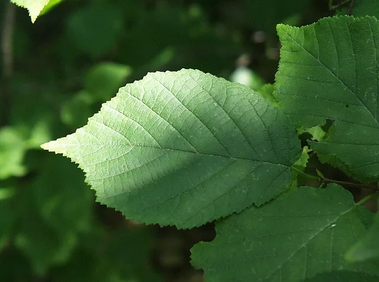

Breads & baking
Hazelnut cake (hazelnotentaart)
Hazelnut cake (hazelnotentaart) is made with wild hazelnut.

How do you make hazelnut cake (hazelnotentaart)?
Buttery cake with toasted hazelnuts.
Wild ingredients
- Hazelnut (Corylus avellana): in season August to October
Watch the recipe

Video: M. Patisserie on YouTube